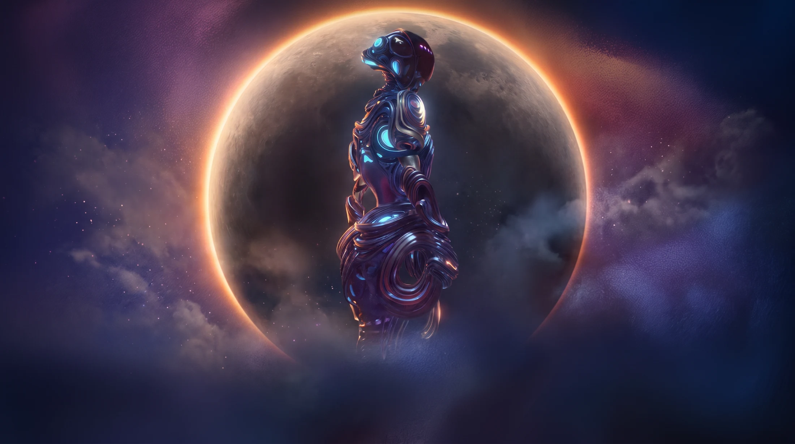
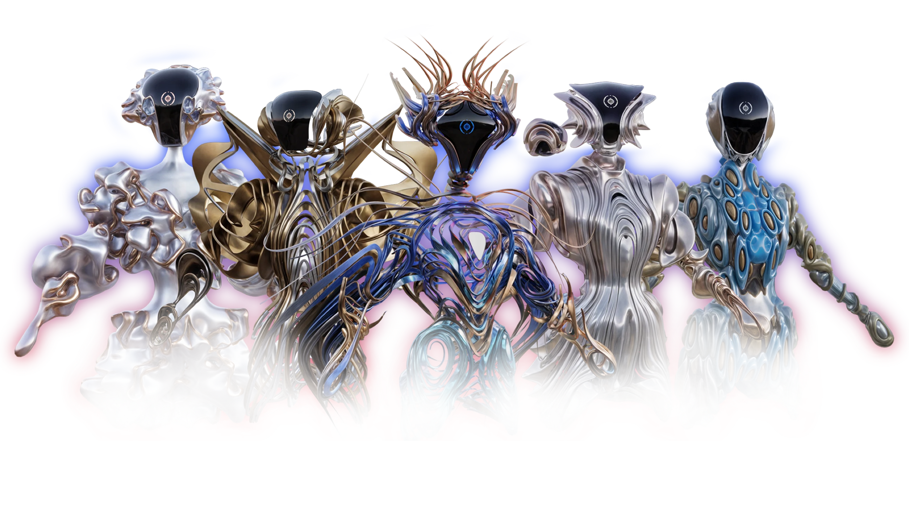

Metagenus an original character universe.
A civilization of one thousand characters, available to license. Nine archetypes, a procedural bloodline of a thousand descendants, and a canon deep enough to carry a game, a series or a season. Built and owned by ILLUSORR.
Metagenus · Character IP
Created by ILLUSORR
Enter the canon

01The Origin
Before the avatarsthere were the Originals.
Metagenus begins as a civilization, not a collection. A people who built identity out of form alone: alloy grown like coral, apparel engineered as ritual, every silhouette a statement of role and rank.
Nine of them survived intact. Everything that followed descends from those nine, and the whole property is created and owned outright by ILLUSORR.